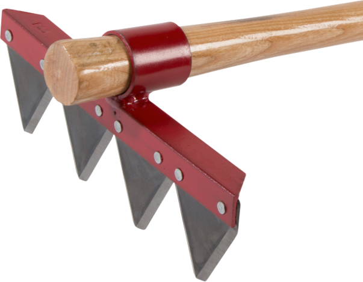

Edge Angle
Edge Angle

Firefighter’s rake
Guidelines shown below are for Included Angles (α).
If this tool is used for landscaping, the directions below for tool maintenance are especially important to ensure the longest tool life.
An accident brings tears, fire safety brings cheers.
Anonymous
|
General Guidelines |
|||
|---|---|---|---|
| α |
Sharp
|
Notes |
|
| 25° |
|
The user of this tool could set differing angles so that the left sides of each triangle is different thant the right sides. |
|
Thank you to Craig “Rooster” Roost of Council Tool in compiling the information for this.
The shape of the grind used is a call best made by the tool's use, based on your own experience. Additional notes are available on separate web pages for Grind Profiles, and Micro / Secondary Bevels.